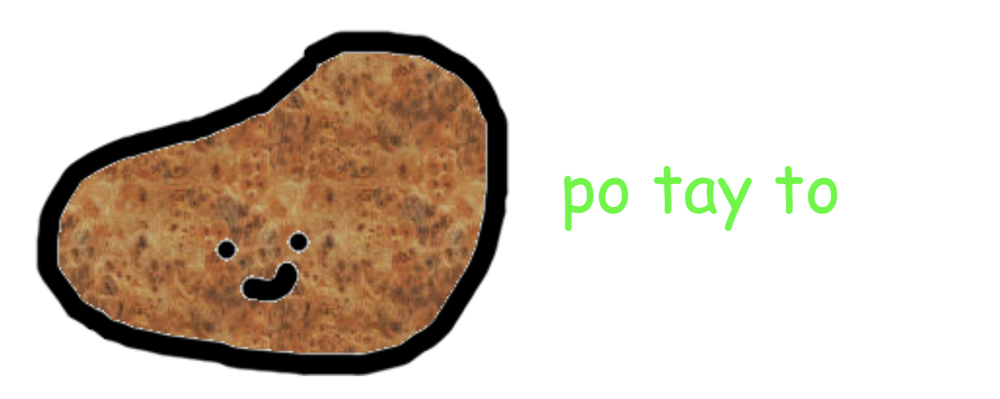

install.packages("remotes") # if not yet installed
remotes::install_github("matt-dray/potato")
tl;dr
Play an interactive version of ‘Potato’—a one-page halfling-themed role-playing game (RPG) by Oliver Darkshire (Twitter, Patreon)—in your R console with the {potato} package.
Potato?
I’ve recently put together a GitHub repo to collect together a bunch of neat games that you can play. The twist? They were built using R.
Yes, R: ‘a FrEe SoFtWaRe EnViRoNmEnT fOr StAtIsTiCaL cOmPuTiNg AnD gRaPhIcS’.
I think R is best suited to either text-based user-input games on the R console, or via a more dedicated interface, like Shiny.1
In this vein, Oliver Darkshire wrote an excellent ‘one-page role-playing game’ called Potato that seems ripe for plucking (well, I guess you ‘pull’ potatoes?) into an R implementation. A simple text interface; updating and tracking variables; clear win conditions. The basic desire to avoid action and simply tend to vegetables.
So… {potato}.
Potato!
You can install the {potato} package from GitHub thanks to {remotes}:
You start a game with:2
potato::potato()--- POTATO ---
A (one-page) RPG by Oliver Darkshire (@deathbybadger)
These and more at https://www.patreon.com/deathbybadger
You are a halfling, just trying to exist.
Meanwhile, the dark lord rampages across the world.
You do not care about this. You are trying to farm potatoes.
Because what could a halfling possibly do about it anyway?
Keep rolling until DESTINY, POTATO or ORC reach 10/10.
- DESTINY: 0/10
- POTATO: 0/10
- ORC: 0/10
- PAY: 1 POTATO to remove 1 ORC
Press [ENTER] to roll... The console will prompt you for input as you play. It’s basically luck-based die rolls, though you will have the chance to intervene with an option to hurl a certain number of precious potatoes at an orc to make it clear off.
You win when POTATO reaches 10. You lose when ORC reaches 10. You also… ‘don’t lose’… if DESTINY reaches 10.
Please see the one-page RPG that David put together and/or support him on Patreon if you like it or any of the other hilarious one-page RPGs that he’s made.
I cannot stress enough that this is his work and all I’ve done is put it into an obscure format that literally three people might look at for a laugh.
Potato…
I could just leave it there, but I think the interesting thing for R users are the various little methods required to make the ‘game’ function.
To display text to the user in the console, we can use cat() or message(). I kinda prefer message() because the user has more control over it in general, like suppressMessages() (which does what you think it does).
message("Hello world!")Hello world!There’s a subtlety in presentation too, which is that the two functions return text in different colours.
The game loop itself runs inside a repeat, which is maybe uncommon for some R users. We’re mostly used to for or while loops for iteration with a known set of things to iterate over, whereas repeat will keep going until we specify a break.
repeat {
if (keep_going) {
do_something()
}
if (!keep_going) {
break
}
}You can imagine a scenario where keep_going is set to TRUE and some actions happen as a result; and that if it becomes FALSE then the game loop ends. In {potato}, we make sure to first print the current values of DESTINY, POTATO and ORC so the user sees them before the game continues or ends.
What are DESTINY, POTATO and ORC? Before we initiate that repeat loop we can specify a bunch of starting values for some important scoring variables. Stylistically, it makes sense to use ALL CAPS for these (that’s how they were written in the original game, after all), but there’s also an old-school rule-of-thumb to specify variables this way in R code so you can more easily spot them in your code.
DESTINY <- 0L
POTATO <- 0L
ORC <- 0Lin addition, we clearly need user input to decide what to do during the game. Most of the time, a user’s hand is forced and they need to roll. But sometimes they have the choice to remove an orc at the cost of one or more potatoes (depending on how the die falls).
This is a logical variable that we can keep track of, i.e. can the user pay (TRUE or FALSE)?
can_pay <- FALSE
if (COST <= POTATO) {
can_pay <- TRUE
} else if (COST > POTATO) {
can_pay <- FALSE
}If the cost to yeet an orc is equal-to or less-than the number of potatoes, we can elect to make the payment. This is expressed in the options provided to the user on the command line.
Given the can_pay value, the user will get the option to either roll the die (FALSE):
event <- readline(
"Press [ENTER] to roll... "
)Or choose to roll the die or make the payment (TRUE):
event <- readline(
"Press [ENTER] to roll or [p] to pay 1 POTATO to remove 1 ORC... "
)Both of which require user input that results in a value stored in the event object. Note that hitting Enter results in an empty string ("").
Die-roll values pass through a series of if statements that are activated based on the number rolled. So if you roll 1 or 2, you’re In the garden...; if 3 or 4, you’ll get A knock on the door...; else the potato cost per orc-yeet increases by 1).
A second roll is made automatically when in the garden or when a knock is heard. Here’s what happens if a 1 is rolled when in the garden:
if (rolled_garden == 1L) {
message(
paste(
rolled_garden_msg,
"You happily root about all day in your garden."
)
)
message("- Result: +1 POTATO")
POTATO <- POTATO + 1L
}Excellent, the POTATO variable counter is increased by 1 in this case and confirmed to the user in a message(). The latest DESTINY, POTATO and ORC scores are then printed back to the user at the start of the next repeat loop.
And then you just… keep potatoing.
Potato.
Once again, you can visit Oliver Darkshire on Twitter as @deathbybadger and support him on Patreon.
You can find the source code for {potato} on GitHub. Issues and pull requests welcome. Just make sure you can afford the charge of one potato to submit.
Environment
Session info
Last rendered: 2023-07-02 12:50:32 BSTR version 4.3.1 (2023-06-16)
Platform: aarch64-apple-darwin20 (64-bit)
Running under: macOS Ventura 13.2.1
Matrix products: default
BLAS: /Library/Frameworks/R.framework/Versions/4.3-arm64/Resources/lib/libRblas.0.dylib
LAPACK: /Library/Frameworks/R.framework/Versions/4.3-arm64/Resources/lib/libRlapack.dylib; LAPACK version 3.11.0
locale:
[1] en_US.UTF-8/en_US.UTF-8/en_US.UTF-8/C/en_US.UTF-8/en_US.UTF-8
time zone: Europe/London
tzcode source: internal
attached base packages:
[1] stats graphics grDevices utils datasets methods base
loaded via a namespace (and not attached):
[1] htmlwidgets_1.6.2 compiler_4.3.1 fastmap_1.1.1 cli_3.6.1
[5] tools_4.3.1 htmltools_0.5.5 rstudioapi_0.14 yaml_2.3.7
[9] rmarkdown_2.22 knitr_1.43.1 jsonlite_1.8.5 xfun_0.39
[13] digest_0.6.31 rlang_1.1.1 evaluate_0.21 Footnotes
Yeah, but have you seen the mind-boggling extent to which Mike Cheng (AKA mikefc, AKA coolbutuseless, AKA R legend) has gone to turn R into a proper game engine?↩︎
Potayto, potahto, let’s call the whole thing off.↩︎
Reuse
CC BY-NC-SA 4.0